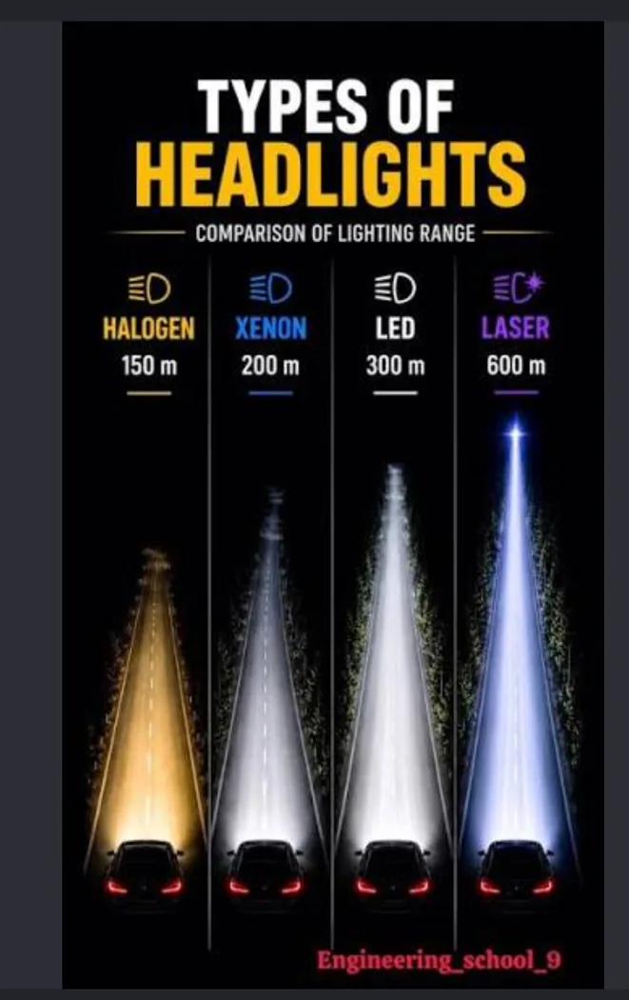
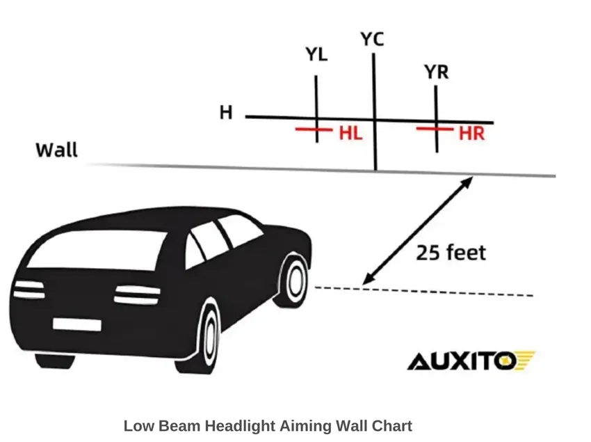
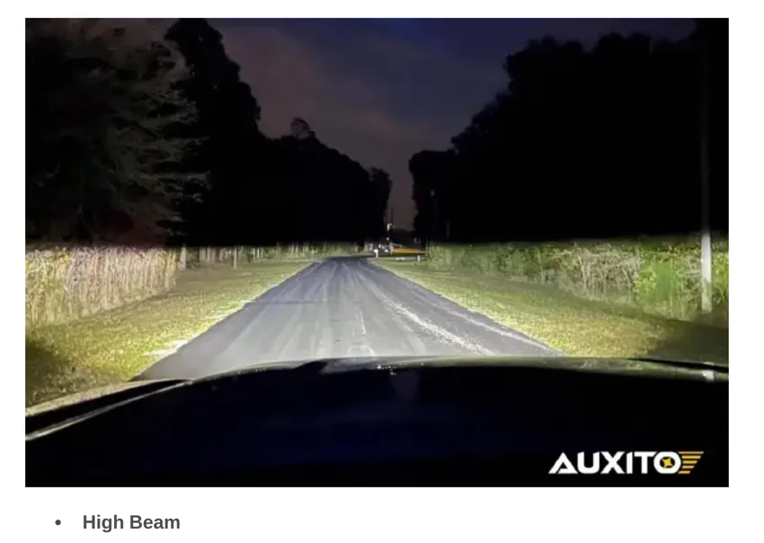
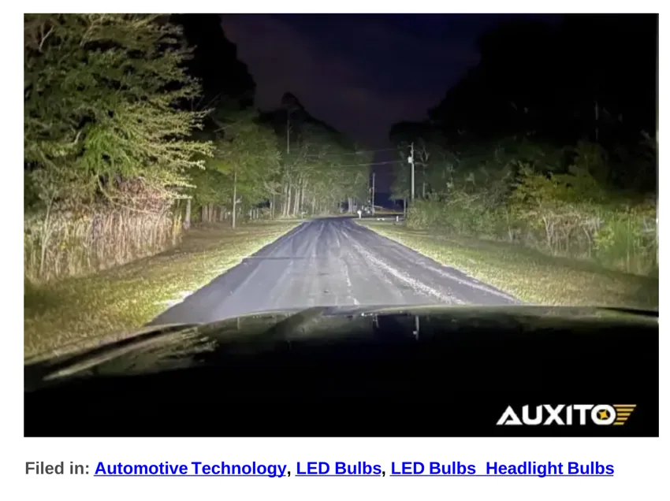

Service bay
Operate the lift, wheel balancer, and tyre changer in one bay.
Preparing workshop…
Loading equipment…
Keyboard controls
References and technical data
Vehicles
- Tesla Model 3 (2017–2023) · Dimensions
- Tesla Model 3 (2017–2023) · Service manual
- Tesla Model 3 two-post lift procedure
- Porsche 911 · Specifications by generation (PDF)
Workshop equipment
The cabinet and fixtures draw on the B800P. The training cycle uses the S400’s 200 rpm and 8-second timing. The supplied Ukrainian lift has 1,800 mm of carriage travel.
- John Bean B800P cabinet and fixtures · John Bean B800P · Datasheet (PDF)
- Ranger swing-arm tyre changer manual
- HELLA SEG V · Operating manual (PDF)
- S400 User Manual, §§ 1.1 and 4
- TWF-50TPL-1850 Manual, §§ 2.1 and 7.2
- Lift model supplied for the Service Lab · Lift - Ukrainian.blend
3D model credits
Headlamp references
The supplied images illustrate wall marking and beam appearance. The infographic’s ranges are illustrative.







Wall marking calculator · HELLA beamsetter procedure
Measured dipped-beam samples
Median intensities on the vertical centerline from a U.S. lamp sample. Lux is calculated on the wall at the selected distance.
Light distribution plots
| Vertical angle | Halogen | LED |
|---|